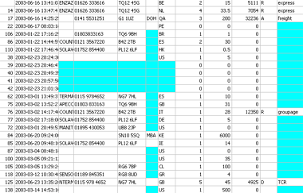

1.1. Introduction
Databases are pervasive in modern society. So many of our actions and attributes are logged and stored in organised information repositories, or Databases
[Section notes PDF 227Kb].
1.1.01. Databases
- Where do we come into contact with databases?
- Supermarket inventories/EPOS
- Supplies, shopping habits, store locations, accounts
- Films (iMDB)
- Cast lists, shooting schedules, histories, budgets
- Department
- Students, courses, staff, payroll
These are all examples of relatively simple databases. All of the information is textual or referential.
1.1.02. New technologies
- Not just traditional, numeric/textual
- Research 70s biased
- Digital media
- Video servers (atom/bbc/youtube)
- Multimedia databases
- Web site, collection of diverse data types
- Google, AltaVista
- Stock Exchange
- Futures, Currency markets, trends
- Databases comprising not only data, but modelling algortihms
- Microsoft's WinFS
Databases don't have to store just text. Increasingly Database servers are storing, indexing and delivering rich-media content, explicitly images, audio and video.
Microsoft's next generation File storage system (WinFS) is a relational database. From a user perspective, searching (the process of indexing content by keyword) is already mainstream. Users are moving away from rigid directory structures (files and folders) and towards keyword-tagged content.
1.1.03. Variations
- Not only in role
- Size
- Video server example
- Complexity
- Ford Puma™ example
- Ford staff organised by production line and car
- e.g. Each staff member answers to a 'part' manager (engines, bodyshell, chassis) and a 'car' manager (Puma, Mondeo, Ka)
- Expense
- User profiles and demands
We've seen that databases are used in a variety of contexts. Those roles imply properties of each of the systems. An interlinked text-only database (such as Unix/Linux's MAN pages) will require much less storage than a video archive.
Some databases are perceptually more complex. Ford's staff management model would be represented as a matrix (in this case 2 dimensional). Computers are very good at organising multi-dimensional space.
1.1.04. Definition
- Embrace diversity
- Data and semantic
- Database: related data, implicit meaning
- Sample/subset of real world
- real world with bounds
- Miniworld/Universe of Discourse
A single definition of a database is hard to come by. Dictionary.com defines a database as: a comprehensive collection of related data organized for convenient access, generally in a computer. The Wikipedia definition runs for several pages.
1.1.05. Abstraction
- Previous lab exercises
- Problem: reading data from a file
- Abstraction theme
- Basis of good OOP and further good P
- from encapsulation to software component analysis
- Layering, splitting data from design
- Solution: grammar (language guide) and data
In some of your previous lab assignments, or practical experience, you may have been faced with the problem of caching information persistently in a file, later to be reloaded.
When writing the data into the file, we are storing more than just that information. We are storing implicitly a design/grammar for that data. That implicit design is evident when accessing the file with a naive interface. If you try to read the data out in a different order, it fails.
A better solution is to split the way the information is stored from the actually information stored.
1.1.06. Data-design divide
- Left-hand/right-hand divide
- LHS: Catalog
- or Meta-data
- or Intension
- or Schema
- i.e. the Design of database
- Types of data, organisation, constraints
- RHS: Extension
- or Snapshot
- The data itself
- Information stored in the database
- Tuples
1.1.07. DBMS
- DataBase
- Management
- System
- Collection of programs that enable users to:
- Define - patterns, boundaries, design
- Construct - populate to go live
- Manipulate - runtime changes
- data in a structured, organised store.
1.1.08. Database Management Systems
- Properties
- Data models and independence
- Requirements
- Categorisation of Database users
- DBMS components
- Architecture
When considering the database systems as a whole, we need to look at all the components, including elements that interact with the DBMS (users, whom we categorise for simplicity).
This course will contain a discussion of the components that make up the system and the way they interact (system architecture).
1.1.09. Models
- Data models
- Relational data model (Oracle)
- Object data model (ObjectStore)
- Legacy systems
- Hierarchical data model
- Network data model
A data model is an invention. It is a construct that allows us to share an understanding of how the system works. As with all good constructs, it's an abstraction; a simplification; a story.
In this course we're going to look at the Relational model, where the database is organised into tables (relationals) and each row (tuple) within that relation is coded (keyed) to allow referencing between the relationals.
The Relational model, inspite of being innovated in the 1970s is still the most popular, underpining mainstream modern databases such as Oracle 10i and MySQL 5.0
As programming languages are becoming increasingly Object orientated, programmers require a means of persistently storing their Objects. Object Orientated Databases (OODBs) exist to fulfil this purpose. OODBs may ultimately replace relational databases, but it's not clear at this stage when.
1.1.10. Other properties
- Beside Data model
- Number of users
- Number of sites
- Cost
- Types of access paths
- Generality, or inversely specificity
MySQL is a highly general database system, in that it supports many different designs. My mobile phone address book is a highly specific database system and as such is not easily extensible.
1.1.11. Independence
- Based on File processing
- Data definition implicit in
- Data
- Application program
- Example of one specific database
- Structure embedded into access program
- Coursework code re-use example
Earlier I made mention of this problem. Databases tie into the wider Software Engineering field. Within Software Engineering, post-development issues of code re-use, maintenance, future evolution etc. necessitate a logical flexible approach to program design. Databases are such an approach. In order to store information in a database you invest a small amount of time in explicitly structuring it, however you then get things like flexibility (data independence etc.) for free.
1.1.12. Program-data independence
- General databases
- Separate Data definition and data
- Catalog/meta-data & tuples
- Data format/structure stored separately
- Program-data independence (e.g. Y2K)
- Changes in data format
- Alter data (tuples)
- Alter grammar (catalog/meta-data)
- We actually split program-data independence into:
- Logical
- Physical
- ...more in a second
1.1.13. Program-operation independence
- In object-orientated databases
- Objects consist of attributes and operations
- Operation defined by
- Header/Interface/Prototype or Signature
- Implementation
- Program-operation independence
- Implementation change hidden from user
- Collectively data abstraction
1.1.14. Logical and physical program-data independence
- Three tier data-model diagram
- Mappings, Data independence
- Logical
- between conceptual and external
- changes to conceptual without changing
- external schemas or application programs
- Physical
- between internal and conceptual
- changes to internal without changing
- conceptual or external schemas

1.1.15. DBMS Requirements
- DataBase Management System
- Abstraction (i.e. program-data independence)
- Conceptual representation (data models)
- Multiple views and User Interfaces
- Data sharing and transaction processing
- Access restriction
- Redundancy removal/optimisation
- Persistent storage (Program objects) & Integrity
- Relationship management & Inference
- Backup and recovery
Here's a summary of what we need from a DBMS
1.1.16. Database Users
- Database as 1y resource, DBMS as 2y
- Database administrators (DBA)
- Database designers
- End users
- Naïve - canned transactions e.g. bank/airline
- Sophisticated - engineers, scientists, query editors
- Stand-alone (personal databases/MS Access)
1.1.17. Results of use
- Knock-on effects of database approach
- Enforcing standards
- Reduced Development time
- Adaptive to change (design changes)
- Up-to-date information (live database)
- Economies of scale
- centralising commonly required resources
...and this is what you get for free. These are the consequences, largely positive, of adopting a database approach to an information storage problem.
1.1.18. Design side
- Meta-data
- Database schema, intension
- Data Model
- Left hand side of database divide
- Schema diagram
- Entity-relationship (ER diagrams)
- UML diagrams
1.1.19. Data side
- Data, under the column heading
- Less easy to look at (volume issue)
- Fundamentally less interesting (more specific)
- Variety of tools for looking at it:
- Here's what a snapshot looks like:

1.1.20. Data model
- Data model
- Structure of the database
- Collection of basic operations
- Collection of behaviours/user defined operations
- Dependent on level of abstraction
- Tier diagram
- External (user views)
- Conceptual*
- Internal
1.1.20. General data model terms
- Entity
- Relationship
- Attributes
- Keys
What follows here is an introduction to the terms which make up the language that we use to describe data models.
1.1.21. Entity
- Selected from real world
- Populate Miniworld/UoD
- Entity is an approximation
- Two elements: Entity types and sets
- Collection of attributes
- Object similarity, classes as entity types
- Entities inter-relate
1.1.22. Attributes
- Data type, domain
- Simple or composite
- Single or multivalued
- Stored or derived
- Null
1.1.23. Keys
- Mechanism for unique identification
- Uniqueness constraint
- Strong and weak entities
- Key attribute
- Composite keys
- Multiple keys
1.1.27. Relationships
- Types and Sets
- Participation by Entities
- Degree - e.g. binary
- Cardinality ratios - e.g. 1:1, 1:M
- Determine occurrence
- Tuples example
- Foreign keys
1.1.28. Database architecture
- Client-Server
- Distributed databases
- Fragmentation by attribute/tuple/relation
- Language and description
- Storage Definition Language (SDL) DESIGN
- Data Definition Language (DDL) DESIGN
- View Definition Language (VDL) DESIGN
- Data Manipulation Language (DML) DATA
- High level, can be embedded but precompiled
- Procedural, record-at-a-time, requires high level support
1.1.29. Structured Query
- Structured Query Language (SQL or SEQUEL)
- Success of relational databases
- Developed for SystemR at IBM
- ANSI standardised
- SQL1 or SQL-86, ongoing extension
- SQL2 or SQL-92, current version
- SQL3 (1999), SQL2003
- DDL, DML(low-level) and VDL